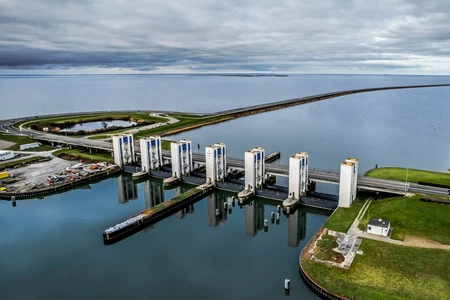
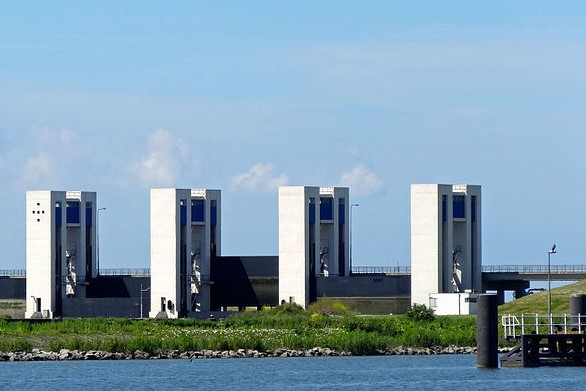
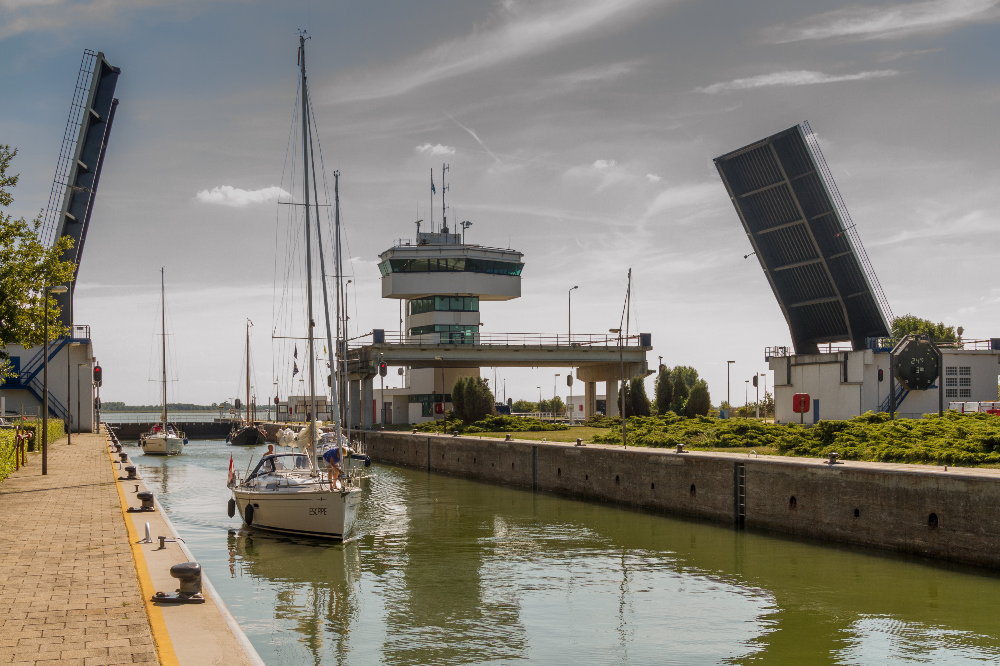

Geodesign
Les 4: (Geo) Design
In de Geodesign les zijn we aan de slag gegaan met wat Geodata is en hoe we dit kunnen gebruiken in onze kaarten. We hebben geleerd dat geodata niet alleen de locatie van objecten bevat, maar ook veel andere informatie kan bevatten.
Een belangrijk concept dat we hebben besproken is hoe we kaarten kunnen maken die niet alleen geografisch correct zijn, maar ook een verhaal vertellen over de mensen die daar wonen. Dit zou ervoor zorgen, dat er niet alleen geografisch kloppende kaarten worden gemaakt, maar ook dat de kaarten een verhaal vertellen over de mensen die er wonen.
Dit is een belangrijk punt, omdat het laat zien dat kaarten niet alleen een weergave zijn van geografische data, maar ook van de mensen die er wonen en werken. Of het nu platteland, een dorp of een stad is dat maakt niet uit.
Verder, hebben we in de lessen wat foto's van de Houtribsluis opgezocht. Dit gaf ons inzicht in hoe geografische locaties kunnen worden gebruikt in praktische toepassingen en hoe design en geodata samen kunnen werken om betekenisvolle visualisaties te creëren.



